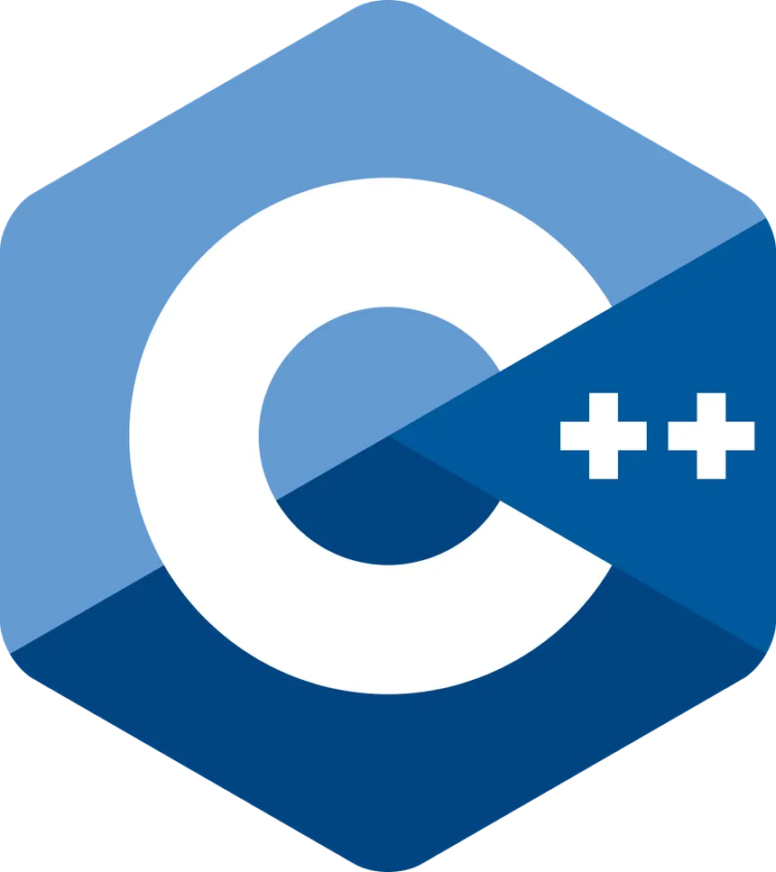

Hi, My name is
Omer
and I am a passionate

MY SKILLS

HTML Developer (2010-2012)
I have a solid foundation in HTML, enabling me to build well-structured and accessible web pages. My expertise includes creating semantic HTML documents, designing interactive forms, and ensuring content is organized effectively. I also focus on SEO best practices and cross-browser compatibility to ensure that web pages function seamlessly across different platforms.

CSS (2010-2012)
With strong skills in CSS, I excel at styling and enhancing the visual presentation of web pages. I’m proficient in designing responsive layouts that adapt to various screen sizes and devices, using techniques such as Flexbox and Grid. My experience includes creating consistent and attractive designs, implementing custom animations, and applying advanced styling to ensure a polished and professional look.
JavaScript (2010-2012)
I have a robust understanding of JavaScript, allowing me to add interactivity and dynamic features to web pages. I’m skilled in manipulating the DOM, handling events, and integrating APIs to enhance user experience. My JavaScript expertise extends to building custom functions, managing state, and debugging to ensure smooth and efficient functionality.
Node JS (2010-2012)
I have experience with Node.js, which allows me to build scalable and efficient server-side applications. My skills include creating RESTful APIs, managing server-side logic, and utilizing asynchronous programming to handle multiple tasks concurrently. I’m familiar with popular frameworks and libraries within the Node.js ecosystem, such as Express, to streamline development and enhance application performance.

C++ (2010-2012)
I have a strong command of C++, which I use to develop high-performance applications and systems. My expertise includes understanding object-oriented programming, memory management, and optimizing code for speed and efficiency. I’m experienced in implementing complex algorithms, data structures, and developing applications that require robust performance and resource management.